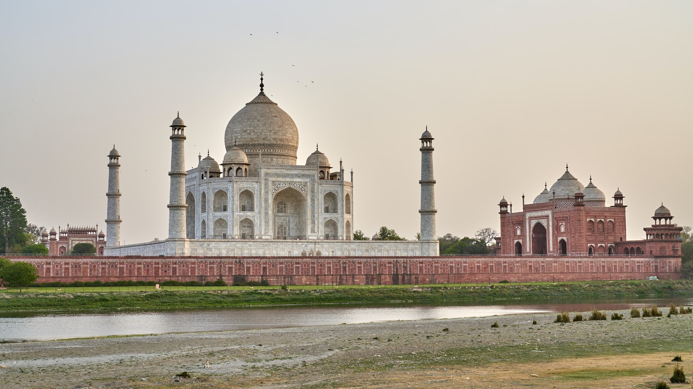
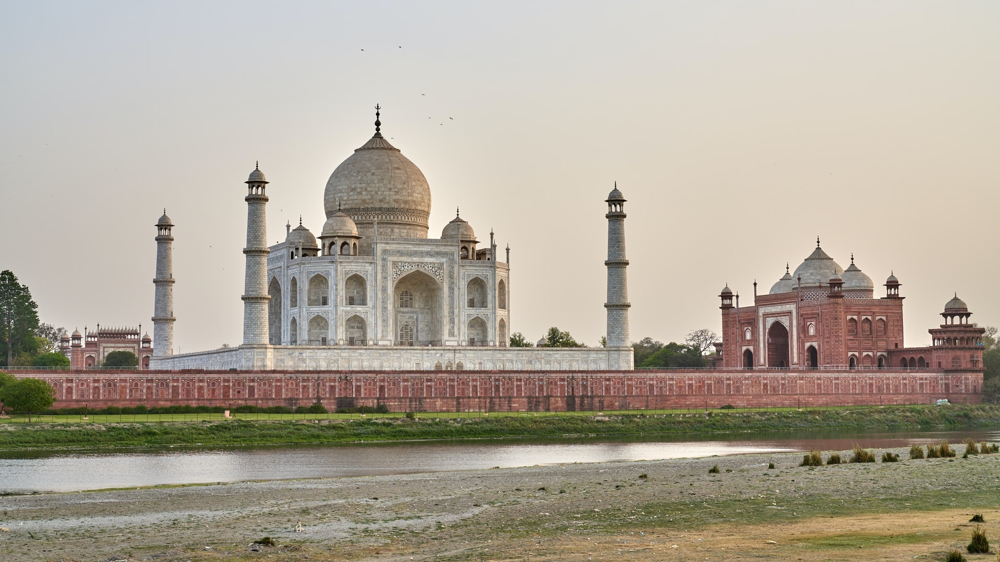

Le Taj Mahal , en persan تاج محل qui signifie « la couronne du palais » est situé à Agra, au bord de la rivière Yamuna, dans l'État de l'Uttar Pradesh, en Inde.C'est un mausolée de marbre blanc construit par l'empereur moghol musulman Shâh Jahân en mémoire de son épouse Arjumand Bânu Begam, aussi connue sous le nom de Mumtaz Mahal, qui signifie en persan « lumière du palais ». Le Taj Mahal a été désigné comme site du patrimoine mondial de l'UNESCO en 1983 pour être "le joyau de l'art musulman en Inde et l'un des chefs-d'œuvre universellement admirés du patrimoine mondial". Il est considéré par beaucoup comme le meilleur exemple de l'architecture moghole et un symbole de la riche histoire de l'Inde. Le Taj Mahal attire 7 à 8 millions de visiteurs par an et en 2007, il a été déclaré vainqueur de l' initiative des 7 nouvelles merveilles du monde (2000–2007). Le Taj Mahal attire un grand nombre de touristes. L'UNESCO a documenté plus de 2 millions de visiteurs en 2001 [59], qui étaient passés à environ 7 à 8 millions en 2014. Un système de tarification à deux niveaux est en place, avec un droit d'entrée nettement plus bas pour les citoyens indiens et plus cher pour les étrangers. En 2018, les frais pour les citoyens indiens étaient de 50 INR , pour les touristes étrangers de 1100 INR. La plupart des touristes visitent pendant les mois les plus froids d'octobre, novembre et février. La circulation polluante n'est pas autorisée à proximité du complexe et les touristes doivent soit marcher depuis les parkings, soit prendre un bus électrique. Les Khawasspuras (cours nord) sont actuellement en cours de restauration pour servir de nouveau centre d'accueil. En 2019, afin de lutter contre le surtourisme , le site a institué des amendes pour les visiteurs qui restaient plus de trois heures. Le domaine est ouvert de 6h00 à 19h00 en semaine, sauf le vendredi lorsque le complexe est ouvert pour la prière à la mosquée entre 12h00 et 14h00. Le complexe est ouvert pour l'observation nocturne le jour de la pleine lune et deux jours avant et après, à l' exclusion des vendredis et du mois de Ramadan .
 
